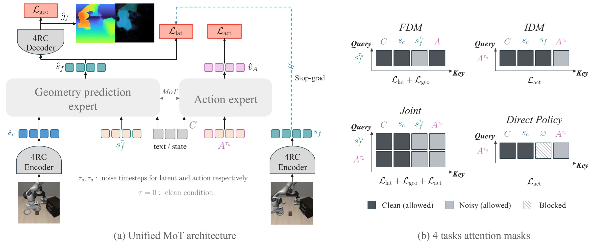
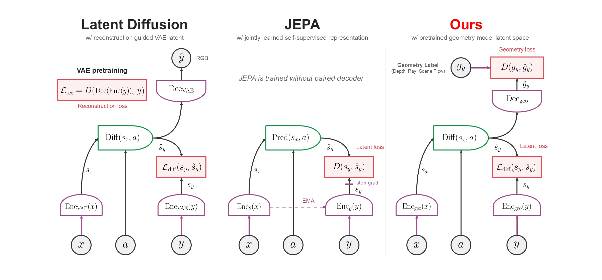
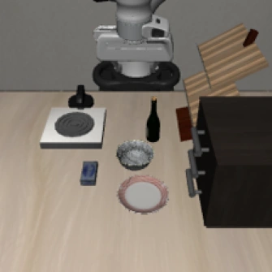
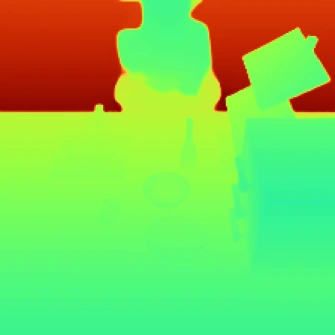
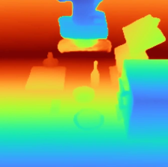
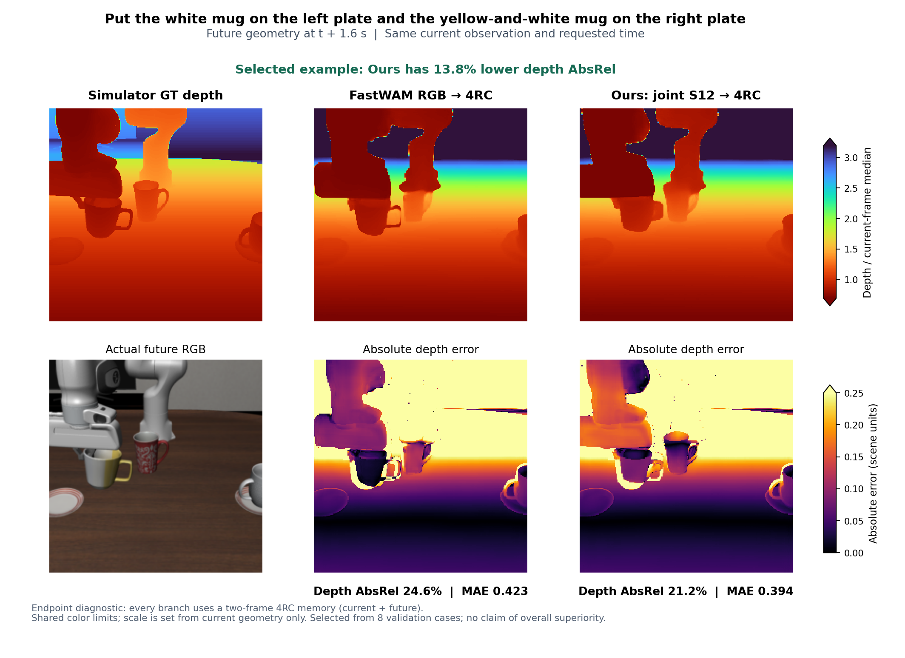
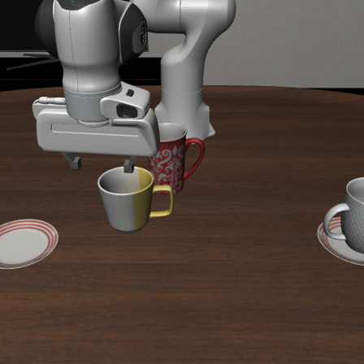
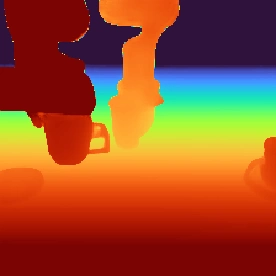
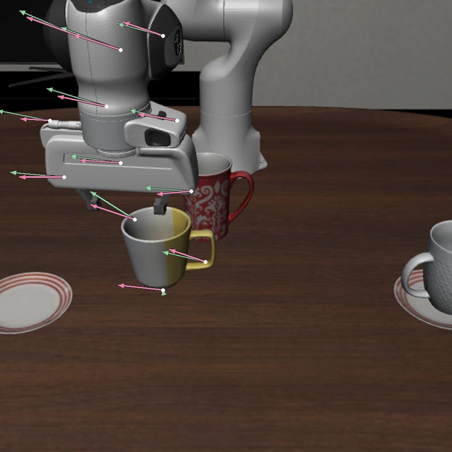
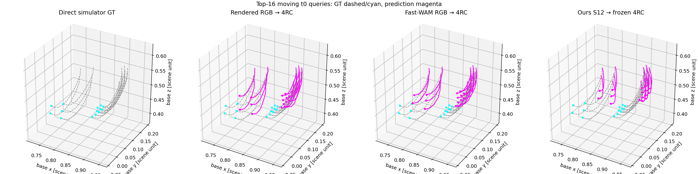

Represent the scene
Multi-view observations become spatial S12 features, retaining a route back to explicit geometry.
Model what moves, where it moves, and how to act.
Future depth and 3D motion bring a geometric view to robot world models.
1,957 / 2,000 successful episodes
8,119 / 10,030 perturbation variants
Explicit, decodable scene predictions
A robot’s future is more than an image.
Predict the structure and motion that matter for action.
01 / METHOD
GeoWAM explores future modeling in a geometric latent space. Its S12 branch forecasts scene states that can be decoded into depth and 3D displacement, alongside action modeling.


Multi-view observations become spatial S12 features, retaining a route back to explicit geometry.
Model future latent states with task, robot-state, and action conditions, instead of a future RGB synthesis target.
A frozen geometry decoder reveals future surfaces and dense 3D displacements in an inspectable form.
02 / POLICY RESULTS
One joint policy across 40 LIBERO tasks. A complete LIBERO-Plus evaluation tests behavior under changes to viewpoints, lighting, objects, sensors, and robot initialization.
50 sequential trials per task.
One checkpoint · 40 known task IDs.
| Method | Spatial | Object | Goal | Long | LIBERO avg. | LIBERO-Plus |
|---|---|---|---|---|---|---|
| π₀ 1 | 96.8 | 98.8 | 95.8 | 85.2 | 94.2 | 53.6 |
| Fast-WAM 2 | 98.2 | 100.0 | 97.0 | 95.2 | 97.6 | 51.5 3 |
| Cosmos3-Edge 4 | 95.6 | 95.6 | 91.6 | 94.8 | 94.4 | — † |
| GeoWAM project policy track | 98.4 | 99.2 | 96.6 | 97.2 | 97.85 | 80.95 |
Selected reference results, not a matched retraining study. Our policy uses task-ID conditioning; baseline training and language interfaces differ. No claim that future prediction caused these policy scores.
† Cosmos3-Edge’s archived local Plus diagnostic was 32/56 = 57.14%; it is excluded from the full-Plus chart because the evaluation set differs.
Our scores. DINOv2-L + FM MoT, fixed step32k; 1,957/2,000 standard episodes and 8,119/10,030 full Plus variants. Single training seed; zero recorded evaluation errors. Task IDs replace text embeddings. Plus language variants are identity controls; excluding them gives 77.73%.
References. [1] LIBERO-Plus · [2] Fast-WAM · [3] WAM robustness study · [4] FluxVLA / Cosmos3-Edge.
View the earlier comparison figure ↗ (historical figure; Plus updated in the live table above) · Asset & metric provenance ↗
ROBUSTNESS AT A GLANCE
Full-Plus success rate: 80.95%.
03 / CLOSED-LOOP ROLLOUTS
The same initial state, with and without a disturbance. Both recordings use one controller-time clock. Jump to the disturbance to compare the response.
A retained V90 ep34 success under the Plus protocol.
04 / FUTURE GEOMETRY
Geometry makes forecasts inspectable: compare future surfaces, examine dense motion, and trace point correspondences through time.
External-view depth · H8 = 0.4 s · 4 standard tasks × 4 replans



GAM 0.1133→S12 0.0175
A retained 1.6-second sequence with simulator depth references.
S12 uses known demonstration actions. The retained sequence has eight future predictions; the RGB column is shown 0.4 s earlier for presentation. This selected case has terminal AbsRel 22.9% (S12) vs. 24.8% (Fast-WAM RGB → 4RC). Across the original eight-case full-sequence comparison, S12 did not outperform Fast-WAM on aggregate.

Dense 3D displacement fields and tracked point trajectories.



12 points sampled from large predicted displacements with trajectory-space diversity. Pink arrows: predicted endpoints; green arrows: simulator reference at +1.6 s. Selection uses predictions only, without reference error filtering. The retained endpoint pairs do not provide intermediate temporal paths.

Top-16 moving queries; ground truth in cyan/dashed, reconstructed or predicted tracks in magenta. Retained known-action AR diagnostic in normalized scene units. This panel illustrates the decoded correspondence capability; it does not establish a trajectory-accuracy advantage over Fast-WAM.
Depth. Motion. Correspondence. Action.
Back to the overview ↑